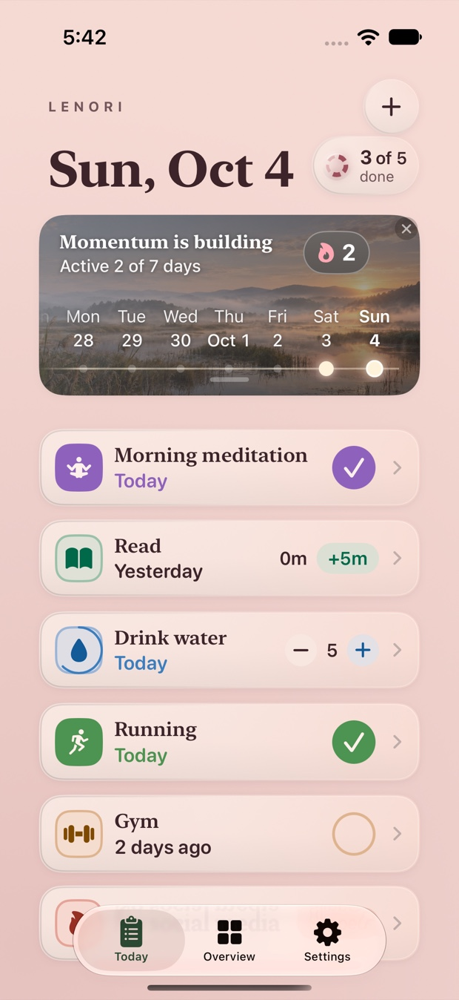
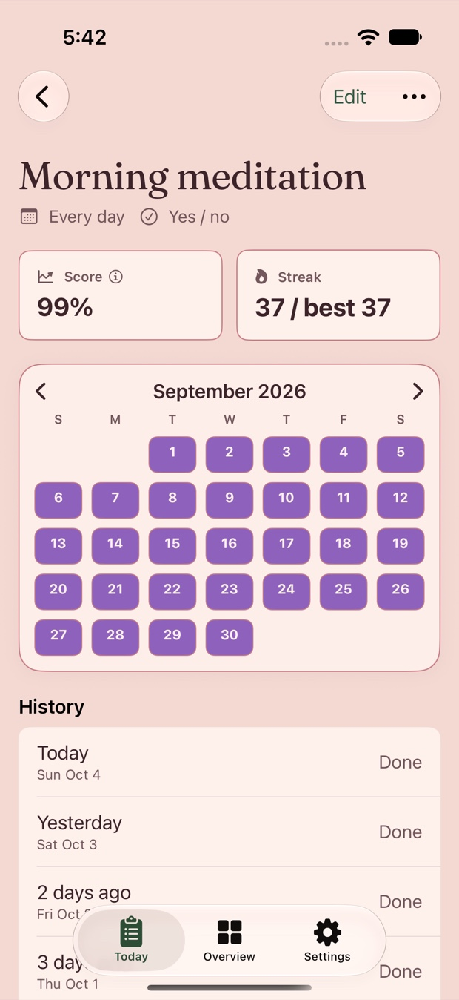
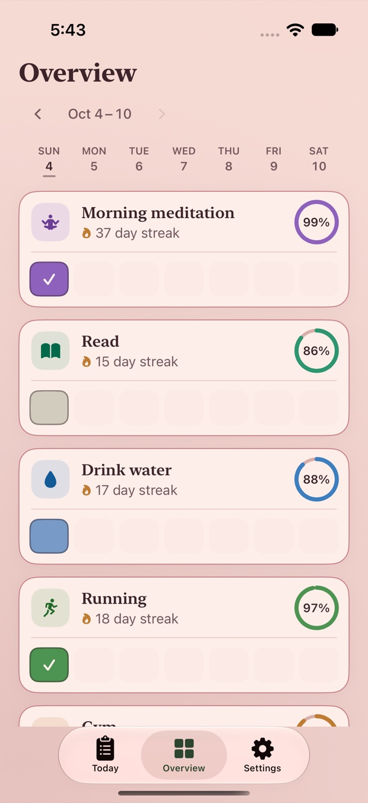
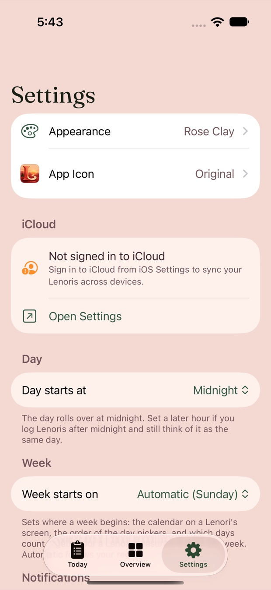

For iPhone and iPad
Keep what matters close.
Lenori is a quiet place for the people, rituals and parts of yourself you never want to lose track of. It shows you how long it has actually been — and leaves the judgement out of it.

A day, not a scoreboard
Today opens on the date and the things you meant to come back to. Nothing shouts.
Your daily Lenoris
A Lenori is anything you want to return to — a person, a ritual, a responsibility. Each row carries its name, its colour and its icon, and tells you when you last came back to it: Today, Yesterday, 2 days ago.
Mark something done with a single tap. Lenoris that count up or down carry a stepper; timed ones add minutes. A small badge beside the date keeps the day's tally — 3 of 5 done — and moves as you go.

Momentum, drawn rather than counted
Above the list sits the Momentum panel: how many of the last seven days you came back, and the streak you are on. It is set against a photograph that changes as you return, so the screen you open is rarely the same twice.
Momentum measures returning, not perfection. A day counts because you opened Lenori and looked — not because everything in it got done.

Made to feel like somewhere
Sixteen themes, each with its own daylight and night composition. Four come free.
-
Rose Clay
Warm clay and early light.
-
Linen
Paper, ink and quiet.
-
Sage
Soft green, low contrast.
-
Lagoon
Cool water and stone.
Twelve more — including Alpine Dawn, Emerald Forest, Arctic Aurora and Amethyst Highlands — come with Lenori Premium.
Twenty app icons
Choose the Lenori that sits on your Home Screen. The one it ships with is always free.
Yours, and only yours
No account, ever
There is no sign-up and no password. Lenori has no server of its own, and the developer has no way to read what you write in it.
iCloud, if you use it
Your Lenoris sync between your devices through your own private iCloud database, using the setting you already control in iOS Settings. Signed out of iCloud, everything still works on the device.
No tracking, no ads
No analytics, no advertising identifier, no third-party code of any kind. Lenori makes no network request outside Apple's own iCloud and App Store services.
Built to be used by everyone
VoiceOver labels throughout, full Dynamic Type, Reduce Motion, Reduce Transparency and Increase Contrast support, and touch targets sized to Apple's guidance.
Read the privacy policy — it names exactly what is stored and where.
Reminders that stay on your device
Give a Lenori a reminder and iOS schedules it locally. Nothing is sent to a server to make a notification appear, and you can turn them off at any time in iOS Settings.
Widgets
Home Screen and Lock Screen widgets show the day's Lenoris and how far through it you are, without opening the app.

Coming to the App Store
Lenori is in preparation for release on iPhone and iPad. There is no public listing yet, and no mailing list to join — when it is available, this is where the link will be.
App Store listing in preparation
Questions in the meantime: support@lenoriapp.com